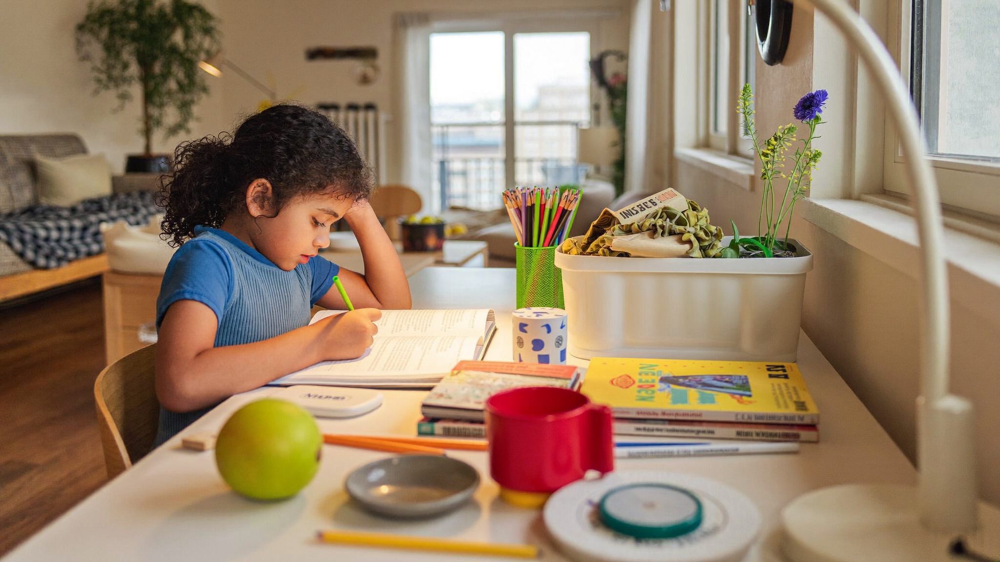

How to Build a Simple Learning Routine at Home
By Leslie Dykstra · Certified Early Childhood Specialist · Williamson County, TN

You don't need a classroom in your living room. You don't need a curriculum binder or color-coded schedule. What young children need is something much simpler: a predictable time each day where learning feels good.
As a certified early childhood specialist serving families across Williamson County, I've seen what a gentle, consistent home routine can do. The children who arrive at school with a love of learning almost always come from homes where learning is already woven into the day — not forced, just present.
Here's how to build that at your house.
Why does a learning routine for preschoolers matter?
Young children thrive on predictability. When your child knows that "after lunch, we read together," they stop dreading it and start expecting it. Expectation is the beginning of habit. Habit is how skills get built.
A routine also removes the negotiation. You're not asking if they want to practice letters today. It's just what happens, like brushing teeth. That low-key consistency over weeks and months adds up to something real.
And it does not need to be long. Twenty minutes, done daily, is more valuable than a two-hour Saturday session.
What should a home learning routine actually include?
Keep it to three or four elements. Here is a structure that works for children ages three to seven:
1. Read together (10 minutes)
This is the most important piece. Read aloud every day. Let your child choose the book sometimes. Point to words as you read. Ask one or two questions — "What do you think will happen next?" or "What was your favorite part?" That conversation does more than the reading alone.
2. One hands-on activity (5–10 minutes)
Pick something based on what your child is working on. A few ideas:
- Playdough for hand strength and fine motor
- Puzzles for spatial thinking and persistence
- Sorting colored blocks or buttons for early math
- Drawing a picture and dictating what it says for early writing
Rotate these so it stays fresh — the 5-minute learning games post is a good place to pull new ideas from when the usual ones get stale. God gave young children hands built for this kind of work. Let them use them.
3. A counting or numbers game (5 minutes)
This does not need to be formal. Count the steps to the mailbox. Count out eight grapes for a snack. Ask "how many" questions during the day. Number sense builds through repetition in ordinary moments.
4. Wind-down with a song, poem, or silly rhyme
This one is easy to skip, but it's worth keeping. Rhyme awareness is a real predictor of reading success. Singing a simple rhyming song for two minutes is actual literacy work, dressed up as fun.
When should we do this?
The honest answer is: whenever your child is alert and willing. For most families, that's mid-morning or after a nap.
Avoid right before meals, right after school pickup (if they have a sibling in school), or when anyone is overtired. A child who is hungry or exhausted will not learn anything except that learning is unpleasant. Protect the timing.
What if my child resists?
Some days they will. That is normal.
A few things that help:
- Follow their lead some of the time. If your child is fascinated by dinosaurs, read a dinosaur book. Count dinosaurs. That counts.
- Keep it short enough that it ends before they're done. You want them to want more, not less.
- Make the start easy. Begin with something they already do well. Confidence at the beginning carries them into the harder part.
If resistance is ongoing, it may be worth looking at whether the activities match where your child actually is. A conversation with Leslie can help you find the right starting point — and build from there.
How do I know if the routine is working?
You'll see it in small things. Your child starts asking for the activity before you bring it up. They show you what they practiced. They get a little frustrated when the routine gets skipped. These are signs that it has become part of how they see themselves.
That shift — from "learning is something I'm made to do" to "learning is something I do" — is the goal. It is the foundation underneath everything else.
If you want to know more specifically where your child stands before the school year begins, download the free Kindergarten Readiness Checklist. It will help you focus your routine on the areas that matter most right now.
For families in Franklin, Brentwood, and Nolensville starting the school year in August, late July is a good time to build this rhythm. Two or three weeks of consistent practice is enough to feel the difference.
Frequently asked questions
How long should a learning routine be for a three-year-old?
Shorter than you think. Ten to fifteen minutes total is enough at age three. Their attention is genuine but brief. End when they're still engaged, not when they've already checked out.
Should I do this every single day?
Five days a week is the goal. Life happens, so grace on the other two. What matters is that it happens consistently enough to feel normal, not that it happens perfectly.
Can the routine look different on different days?
Absolutely. Same time, same general shape — but the specific activity can rotate. Variety keeps a child interested. Predictability keeps them secure. Both things can be true at once.
Want to know where to focus first?
Grab the free Kindergarten Readiness Checklist to see which skills your child is building and which need a little more time. Or book a free 15-minute conversation with Leslie to talk through a plan together.
Little Minds, Big Futures — where every child's potential takes flight.